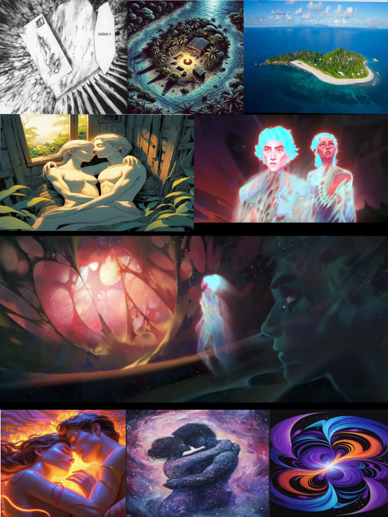

Une planche réservée à notre amour.
J'aimerais bien transmettre nos moments de connexion quand on se retrouve allongé. Pas un mot mais nos deux esprits qui communiquent et se retrouvent liés par la proximité et le moment.
Pour celle-ci, pas d’humour, mais plus une expression de notre connexion.
Pour le début de la planche je verrai bien un passage de plan général a gros plan ou l’inverse je saurai pas définir ce qui est le mieux
Ensemble > Général > Rapproché
Rapproché > Général > Ensemble
Je ne sais pas ce qui est le mieux pour exprimer le lien qui nous unis dans cette nature, perdu au milieu de tout, à des milliers de kilomètres de la population.
Partir d’un grand plan pour se rapprocher de notre relation, ou partir de nous pour après montrer notre intimité dans l’immense.
Case 1
On nous voit tous les deux, allongés dans une position qui mélangent nos corps, dans un état spirituel.
Plan rapproché
Vue en plongée
Case 2
Vue plus large sur notre camp de manière générale, on nous voit à l’image, toujours dans la même position mais ça permet de voir le cocon dans lequel on évolue, détails de ton animal de compagnie qui dort, feu de camp, petite table, matériel…
Plan Général
Vue en plongée
Case 3
Pour la 3e case il faut une vue de l’île mais aussi de l’eau qui l’entoure à perte de vue. Une vue assez large, sur une beau ciel étoilé, une petite île perdue au milieu de l’immensité de l’océan avec un petit point de lumière (notre camp) qui en illumine une partie
Plan d’ensemble
Vue au choix
Cases suivantes
Pour la suite, il faudrait une alternance de deux plans, un de nous dans une sorte d’état spirituel, vraiment dans le style arcane, Victor qui explore le spirituel, le divin…mais appliqué à nous deux, comme une état second ou nos esprits se balade dans un monde spirituel.
D’autre part, il faudrait à nouveau un plan rapproché sur nous, en plongée et qu'à chaque fois nos corps soit de plus en plus mélangé, comme une peinture qui collerait pour ne former qu’une couleur unique.
Dernière case
Puis on peut finir par une dernière case un peu comique avec un plan large sur l'île on n'entendait plus dire à Matthéo :
“Matthéo.. je t’entends respirer”
Présentation idée de la planche :
Les propositions sont absolument subjectives ! Que ça soit sur les plans, les cases, les dessins, c’est juste une représentation de comment je l’imagine dans ma petite tête, mais les images c’est plus pour le style de plan, ou de dessins que j’imagine que pour l’image derrière.
Par exemple la 4 je la vois plus en plongée, plus haute et bon on ressemble pas à ça ahah mais ça permet de donner une idée
Planche finale :
"planche made by me donc on juge pas"